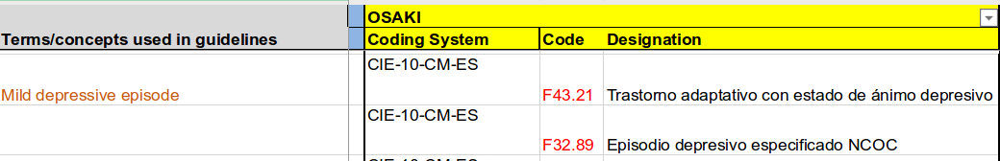
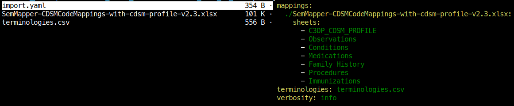

2019-09-03
The Semantic Interoperability Mapper (SIS) is part of the interoperability module of the C3-Cloud project.
It's purpose is to solve the issue of vocabulary disparities between the different users of the system (each user, or site, is an hospital using the application and sending patient data to the system). Different hospitals use different codes and code systems to represent medical data describing their patients. There are several code systems in use, and several national variants of code systems, presenting different levels of granularity, and translated designations of the codes. Thus, in a project such as C3-Cloud, where all the users need to send data to the system, it is needed to provide a way to understand these different codes and operate with them consistently.
The SIS exposes manually curated mappings of medical data between the different users of the C3-Cloud infrastructure . The medical data are codes of medical conditions, clinical observations, medications and other types of medical data used by the system and for which the different sites may not use the same coding system.
The service is a REST API, answering to various HTTP requests to perform the mappings and other operations such as updating the database or exploring the available mappings.
it is served at https://rubis.limics.upmc.fr/c3-cloud , where a demonstrator is available, allowing the users to explore the data, and interactively see and try different requests built via a graphical user interface, and discover the expected format of the request as well as the answer they can expect from the API.
This document is a more formal and thorough documentation of the service. The reader is invited to visit the abovementioned demonstrator for a quick overview of the system's capabilities.
Performing a mapping of a code from one site to another means:
The SIS is defines different concepts, denoting any data used by the C3-Cloud project and requiring to be mapped between the different sites using the application. Each concept has one or several corresponding code system, code and designation for each site using the system.
There is a special site, named CDSM (Clinical Decision Support Modules). This site corresponds to the C3-Cloud central representation, and is treated as any other site by the system.
In order to properly identify coding systems, Uniform Resource Identifier (URI) are used. A list of uri for each code system is maintained and can be listed using the API (see chapter List the code systems). The original document is located here .
For each site and each code, there is a corresponding representation using the site's native code system. Depending on the granularity of the code system, one or more codes can be necessary to fully represent the Concept. When performing a mapping, it is thus necessary to specify the type of relation between the codes of the source and those of the destination.
|
|
CDSM | OSAKI | ||||
| Code system | Code | Designation | Code system | Code | Designation | |
|
Mild depressive episode |
SNOMED CT |
310495003 |
Mild depression (disorder) |
CIE-10-CM-ES |
F43.21 |
Trastorno adaptativo con estado de ánimo depresivo |
|
|
|
|
CIE-10-CM-ES |
F32.89 |
Episodio depresivo especificado NCOC |
|
To perform a mapping of The SNOMED CT code 310495003 from the CDSM to OSAKI, we retrieve the Concept to which the code refers to (Mild depressive episode), and we then query the corresponding codes for OSAKI, and return all of them. Since for OSAKI two codes are necessary to fully describe the concept of mild depressive episode, and only one code is required for the CDSM, each code of OSAKI is narrower than the SNOMED CT code. Inversely, the SNOMED CT code is broader than each one of the OSAKI's CIE-10 codes.
The SIS sends it's responses as JSON documents, following the FHIR ConceptMap specifications.
This section describes the endpoints and methods used by a regular user of the system, not seeking to modify data.
This is the API's reason to exist, this endpoint represent the whole end-user functionality.
example: /translate/?code=310495003&code_system=http://snomed.info/sct&fromSite=CDSM&toSite=OSAKI
endpoint: /translate
method: GET
parameters:
code_system : code system's uri (see GET /code-systems below)code : code to translatefromSite : source sitetoSite : destination siteresponse: FHIR ConceptMap resource as a JSON document:
{
"group": [
{
"element": {
"code": "source code",
"display": "source code designation",
"target": [
{
"code": "target code",
"comment": "description of the relation with the source code",
"display": "target code designation",
"equivalence": "Equal | Equivalent | Narrower | Broader"
}
]
},
"source": "source code-system's URI",
"sourceVersion": "source code-system's version",
"target": "target code-system's URI",
"targetVersion": "target's code-system's version"
}
],
"resourceType": "ConceptMap",
"title": "human readable description of the mapping"
}
These endpoints can be useful to explore what the database contains, eg. to retrieve the code system's URI that should be used to construct mapping queries.
endpoint: /code-systems
method: GET
parameters: none
response: JSON document containing all the code systems:
{
"count": 17,
"data": [
{
"code_system": "SNOMED CT",
"code_system_uri": "http://snomed.info/sct",
"code_system_version": "unknown"
},
(...)
]
}endpoint: /codes
method: GET
parameters:
site : return only the codes used by a specific siteresponse: JSON document containing all the corresponding codes:
{
"count": 1286,
"data": [
{
"code": "anti_platelet",
"code_system": "C3-Cloud",
"code_system_uri": "http://www.c3-cloud.eu/fhir/clinical-concept",
"designation": "Anti platelet"
},
(...)
]
}endpoint: /concepts
method: GET
parameters: none
response: JSON document containing all the concepts in the database:
{
"count": 343,
"data": [
"C3DP_CDSM_PROFILE|Anti platelet",
"C3DP_CDSM_PROFILE|Pioglitazone",
"C3DP_CDSM_PROFILE|Sulfonylurea allergy",
"C3DP_CDSM_PROFILE|Muscle pain",
"C3DP_CDSM_PROFILE|Angiotensin II Blockers",
(...)
]
}NB the concepts are supposed to be transparent to the user and are specific to the SIS database. They are not intended to be used by any other part of the C3-cloud project
endpoint: /mappings
method: GET
parameters:
site : filter by siteconcept : filter by conceptresponse: JSON document containing all the corresponding mappings:
{
"count": 1275,
"data": [
{
"code": "anti_platelet",
"code_system": "C3-Cloud",
"code_system_uri": "http://www.c3-cloud.eu/fhir/clinical-concept",
"concept": "C3DP_CDSM_PROFILE|Anti platelet",
"designation": "Anti platelet",
"site": "CDSM"
},
{
"code": "anti_platelet",
"code_system": "C3-Cloud",
"code_system_uri": "http://www.c3-cloud.eu/fhir/clinical-concept",
"concept": "C3DP_CDSM_PROFILE|Anti platelet",
"designation": "Anti platelet",
"site": "SWFT"
},
(...)
]
}endpoint: /all
method: GET
parameters: none
response: JSON document containing all the sites, concepts, code-systems and mappings
The mappings of the semantic mapper are populated from a spreadsheet available here.
The Semmaper spreadsheet follows a simple structure that is used by a python script, allowing an automated synchronisation between the spreadsheet and the server directly from the client side (see below, "python script").
Any request that modifies the data must be authenticated with an API key.
The API key is unique and can be requested by sending an email to mikaeldusenne@gmail.com. It should be included in a HTTP header named key for each request.
Any request not properly authenticated will result in a HTTP error 401 (Unauthorized).
A graphical user interface is available at https://rubis.limics.upmc.fr/c3-cloud/. The maping-editor tab allows users to view and modify mappings by searching through them and editing codes. NB this graphical user interface was initially designed as a demonstrator of the API and might therefore lack a few functionalities, like adding a new concept or a new site to the database.
You should consider this tool as a quick reviewer of the data and possibly to make small modifications, but do not forget that the initial data file should be the spreadsheet in Microsoft sharepoint, and the python script below will be much more adapted to keep the spreadsheet and the server synchronized.
A python script was designed with the sole purpose of parsing the manually crafted spreadsheet, check the differences with the server, and perform the necessary updates when needed. please see the link above for instructions for installing.
This script relies heavily on the structure of the spreadsheet, it is therefore imperative to follow the corresponding structure of data (see screenshot below):
On each sheet:
site is spread on three columns:
Coding System, Code, and Designation (these names are parsed by the script)It is possible to add an arbitrary number of sites next to each other as the script is going to detect them automatically.
Each subsequent row in these columns (therefore from row 3) contains the data, that is, the codes for the mappings.
When several codes are needed for a mapping, each code should figure on a separate row. you can insert additional rows in the spreadsheet under a specific concept without disrupting the functionality of the script. It will not affect other sites. The duplicated rows may or may not repeat the name of the concept in the A column (the script will infer the name from the first row)

Example of multiple mappings for one concept: F43.21 and F32.89 are both mapped to "mild depressive episode" for the "OSAKI" site
The script should be used from a terminal, it does not provide a graphical interface.
The spreadsheet (and, if it needs to be updated, the terminology list) should be downloaded from the sharepoint and put in a separate folder. The folder should contain a yaml file describing at least :
Here is a screenshot showing, on the left side, the different files in the folder, and on the right side, the content of the corresponding import.yaml file:

This yaml file is required as some sheets in the spreadsheet can be used for different purposes.
for ease of use, you may copy and modify accordingly to your need the following content and save it in the same folder as the one containing the mapping list:
# Path to the api key (a text file containing the API key)
api_key: ./apikey
# spreadsheet(s) to import
mappings:
# Path to the spreadsheet
./SemMapper-CDSMCodeMappings-with-cdsm-profile-v2.3.xlsx:
# list of the names of the sheets containing mappings
sheets:
- C3DP_CDSM_PROFILE
- Observations
- Conditions
- Medications
- Family History
- Procedures
- Immunizations
# path to the csv file describing the different terminology names and their corresponding URI
terminologies: terminologies.csvyou may refer to this link for a quick introduction to the YAML syntax.
Several options are available to change the behaviour of the script:
--dry-run (optional) : do not actually send the requests, this option is useful when one wants to see what operations would be performed by the script without actually modifying anything.--force (optional) : when there is a conflict between the spreadsheet and the server, overwrite the server's data with the spreadsheet.--config (required) : path to the yaml configuration file--url (optional) : url of the service, should end with /c3-cloud/Without the force option, the script will upload the new mappings but not overwrite a previously existing mapping containing different data.
the script will delete old mappings that are not present in the spreadsheet anymore.
Here is an example of a typical run of the script:
python ~/Bookmarks/c3_cloud_client/c3_cloud_client/loaderScript_pandas.py \\
--url 'https://rubis.limics.upmc.fr/c3-cloud/' \\
--config './c3_cloud_client/data/data_2019_07_28/import.yaml' \\
--dry-run
here we would simulate an import of the file(s) as specified in ./c3_cloud_client/data/data_2019_07_28/import.yaml to the service located at https://rubis.limics.upmc.fr/c3-cloud/ . Since we use the --dry-run option, the script will not perform any actual update. You can remove the --dry-run or replace it with --force depending on what you intend to do.
The script outputs informations describing what is being performed, and displays a short summary when it finishes.
new mappings
{'codes': [<class 'c3_cloud_client.objects.Code'>({"code": "F341", "code_system": {"code_system": "ICD-10-SE", "uri": "urn:oid:1.2.752.116.1.1.1.1.3"}, "designation": "Dystymi"}))], 'concept': 'Family History|Dysthymia', 'site': 'RJH'}
[uploading <Family History|Dysthymia>@<RJH>]
modified mappings
This shows that the mapping for Conditions|Renal outflow obstruction in the CDSM site was already present on the server but with different data. Here we can see that the local file has a different denomination, as the mention "(disorder)" was removed in the spreadsheet. With the --force option, the new denomination would replace the old one in the server.
already in db→ <Conditions|Renal outflow obstruction>@<CDSM>:[different]
local:
Conditions|Renal outflow obstruction@CDSM
(SNOMED CT@http://snomed.info/sct):
- (7163005) Urinary tract obstruction
server:
- (7163005) Urinary tract obstruction (disorder)
[use --force to overwrite]
deleted mappings
delete Conditions|Recurrent hematuria
[deleting concept Conditions|Recurrent hematuria]
summary
illegals: {'', 'no designation', 'tbc by swft', 'no code', 'n/a', 'tbc by rjh', 'no coding'}
identical: 1240
different: 1
new: 1
error: 0
The illegals mentions codes that have been skipped due to filtering, such as when the designation is emply or contains 'N/A' or 'TBC by …' (to be completed by …).
This service is written with python 3.7, the API is deployed with Flask and the database implemented with sqlite. In order to obtain production-level performances, it is deployed with gunicorn and nginx. The nginx server is configured to use HTTPS and the certificates are generated using certbot.
In order to ensure easy and reproducible deployment, the application is packaged in a docker container. The container runs the nginx server and a cron task scheduling SSL certificate renewal, and is best deployed using docker-compose. It is necessary to mount /etc/letsencrypt for the certificates, and the db folder containing the sqlite database. Python dependencies are installed in the container, using a requirements.txt
Tests are implemented using pytest and allow to check the correct behaviour of the different functionalities in different scenarii.
The API key implementation is fairly simple and relies on a single API key. any request having the ability to modify data on the server must be authenticated with the api key in the HTTP headers.
If you have any question regarding the semantic mapper's functionality and usage, please send an email to Mikael Dusenne